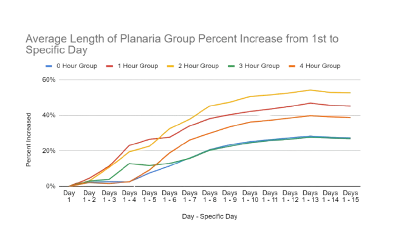

Authors
Procedure
Results

Effect of Different Amounts of Artificial Light At Night (ALAN) on Planarian Regeneration Rate
Abstract
Artificial light at night (ALAN) has significant impacts on the behaviors and ecologies of many organisms, particularly invertebrates.
The effects of ALAN on planarian regeneration have not been explored yet.
This study investigated how different ALAN exposures affected planarian regeneration rates.
Five groups, each with six bisected planaria, were set up.
The 0-hour control group was placed under normal light conditions.
The 1-4 hour groups were exposed to ALAN for the number of hours corresponding to the group name (e.g., 1 hour, 2 hours, etc.).
Raw data was analyzed to assess the correlation between ALAN exposure (independent variable) and regeneration rate (dependent variable).
Regeneration rates of planaria were observed and recorded.
There were no statistically significant differences in planarian regeneration rates across the various ALAN exposure conditions.
Despite minor daily light cycle disruptions from 1 to 4 hours of ALAN, planarians exhibited consistent regeneration rates.
Further research is needed to validate these findings and explore potential long-term effects.